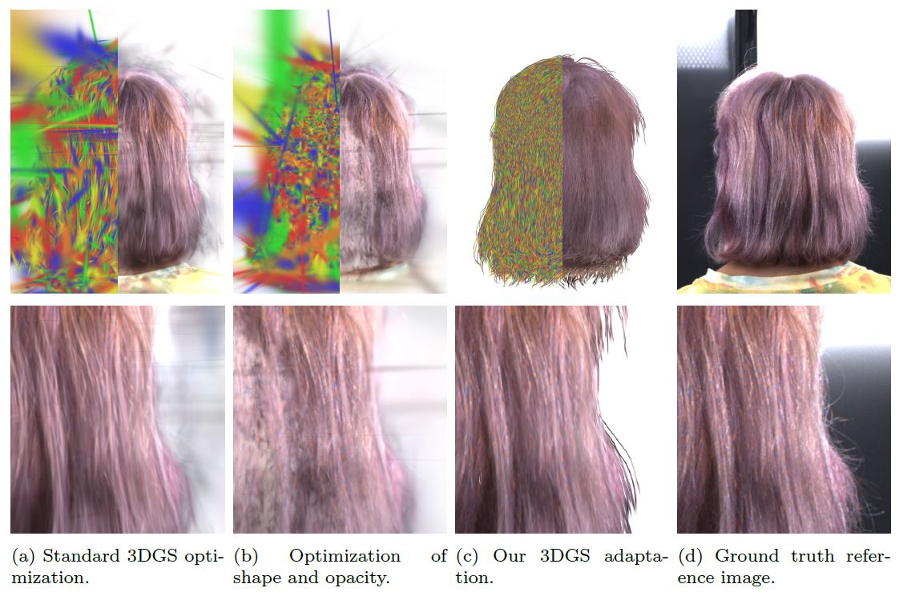

{kind=link}
News
- May, 2025 : Accepted at Computer and Graphics 2025!
- June, 2025 : Attended and presented at CEIG 2025!
- June, 2025 : Web launched.
Abstract
We introduce a novel method for generating a personalized 3D Gaussian Splatting (3DGS) hair representation from an unorganized set of photographs. Our approach begins by leveraging an out-of-the-shelf method to estimate a strand-organized point cloud representation of the hair. This point cloud serves as the foundation for constructing a 3DGS model that accurately preserves the hair's geometric structure while visually fitting the appearance in the photographs. Our model seamlessly integrates with the standard 3DGS rendering pipeline, enabling efficient volumetric rendering of complex hairstyles. Furthermore, we demonstrate the versatility of our approach by applying the Material Point Method (MPM) to simulate realistic hair physics directly on the 3DGS model, achieving lifelike hair animation. To the best of our knowledge, this is the first method to simulate hair dynamics within a 3DGS model. This work paves the way for future research that can leverage the flexible nature of 3DGS to fit more complex hair material models or enable physics properties estimation through dynamic tracking.
Resources
Results

Optimization of different 3DGS representations following our method. Each row illustrates the optimization process of a scene at validation steps 0, 1000, 2000, 7000, 15000 and 30000, which is the final step, converging towards a photorealistic hair appearance. The last column shows the ground-truth views.
{kind=link}
Comparison of experiments conducted with different optimizations of the 3DGS model. For each column, the top row shows a training view, in which the left half shows the distribution of Gaussians, and the right half shows the rendered result. The bottom row provides a close-up of the 3DGS representation. Our final approach demonstrates that the Gaussians are better aligned with the strands compared to other setups, and their shape and size more accurately represent realistic hair.
Bibtex
Acknowledgements
We would like to thank Marcos Ernesto García Muñoz and Lorenzo Costábile Domínguez for their invaluable assistance throughout the preparation of this article.